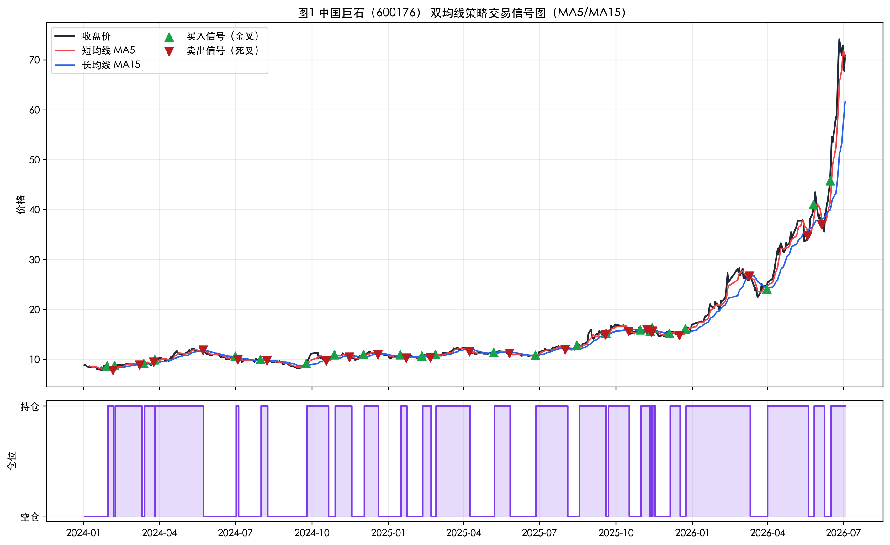
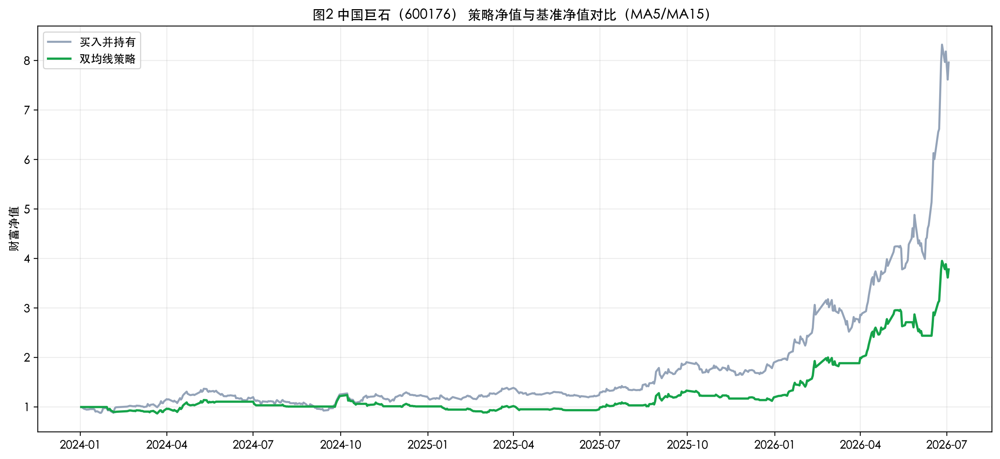
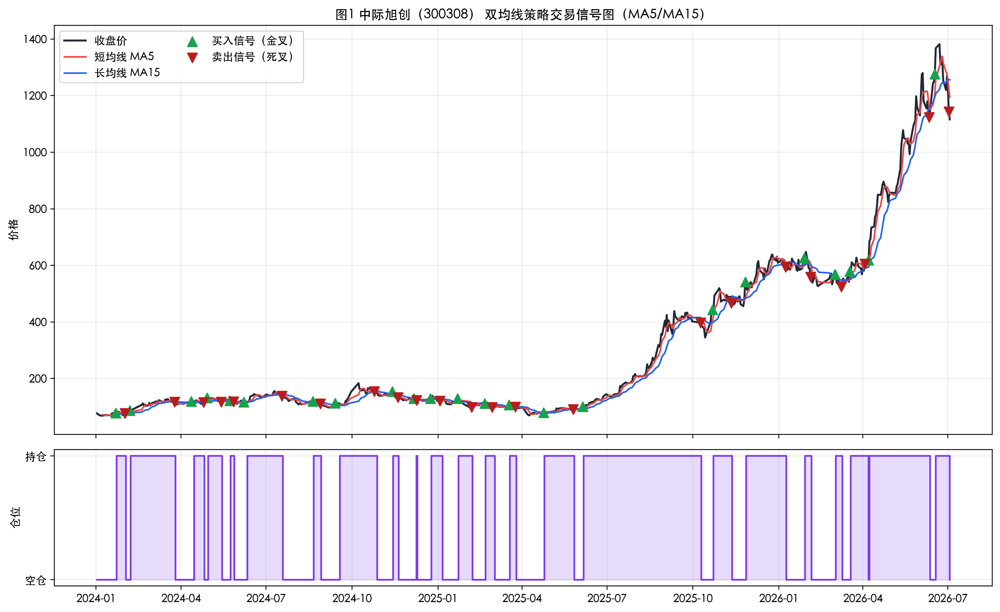
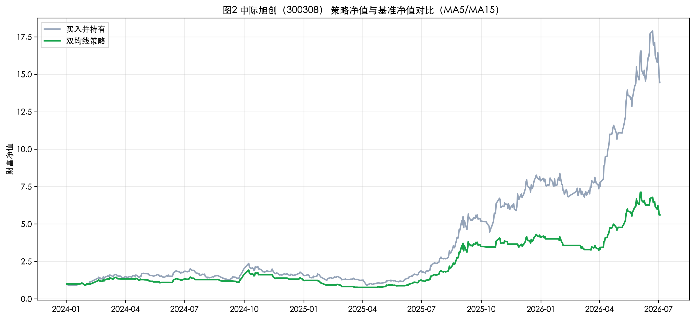
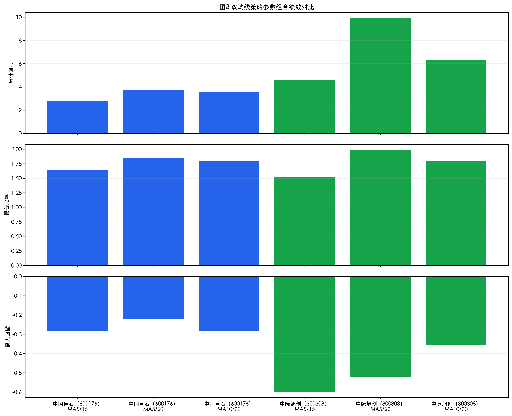

诺拉+TASK3
1. 任务目标
本次 Task3 的目标是在前两次任务的数据准备和指标构建基础上，实现一个经典且可解释性较强的量化交易策略，即双均线策略。作业不仅要求给出策略结果，还要求说明信号形成方式、回测逻辑以及绩效指标含义，从而形成一份可追溯、可复现的白盒分析结果。
2. 双均线策略概念说明
双均线策略通过比较短周期均线与长周期均线的相对位置，来判断市场趋势是否发生变化。短均线对近期价格更敏感，长均线更平滑，更能代表中期趋势。
2.1 金叉
当短均线从下方向上突破长均线时，称为金叉。金叉通常表示短期动能增强，趋势可能转强，因此常被视为买入信号。
2.2 死叉
当短均线从上方向下跌破长均线时，称为死叉。死叉通常表示短期动能转弱，趋势可能下行，因此常被视为卖出信号。
本次实验将 MA5/MA15 作为默认参数，同时测试 MA5/MA20 和 MA10/MA30 两组参数，以观察不同均线周期对策略绩效的影响。
3. 绩效指标概念说明
- 累计回报（Cumulative Return）：策略从起始到结束总体获得的收益水平。
- 最大回撤（MDD）：策略净值从某个历史高点回落到后续低点的最大跌幅，用于衡量回撤风险。
- 夏普比率（Sharpe Ratio）：单位风险对应的收益水平，常用于衡量收益和波动之间的平衡。
4. 数据与回测设置
- 标的 1：中国巨石（600176）
- 标的 2：中际旭创（300308）
- 数据区间：2024-01-02 至 2026-07-03
- 数据来源：前两次任务中已保存的前复权日线数据
- 回测方式：仅做多，不做空
- 执行假设：当日依据均线关系生成信号，次日按持仓状态计入收益，以避免未来函数偏差
- 交易成本：本次基础实验中暂不加入手续费和滑点
5. Python 实现流程
- 加载已存储的股价数据
- 设定短均线和长均线周期，并计算均线
- 根据短均线与长均线关系生成买入与卖出信号
- 绘制股价、均线和交易信号图
- 计算每日策略收益率、累计净值与回撤
- 统计累计回报、最大回撤和夏普比率
- 对不同股票、不同均线周期进行对比分析
6. 回测结果汇总
| 股票 | 参数组合 | 累计回报 | 最大回撤 | 夏普比率 |
|---|---|---|---|---|
| 中国巨石（600176） | MA5 / MA15 | 278.08% | -28.45% | 1.65 |
| 中国巨石（600176） | MA5 / MA20 | 374.53% | -21.88% | 1.84 |
| 中国巨石（600176） | MA10 / MA30 | 356.04% | -28.23% | 1.79 |
| 中际旭创（300308） | MA5 / MA15 | 461.22% | -59.78% | 1.52 |
| 中际旭创（300308） | MA5 / MA20 | 991.60% | -52.27% | 1.98 |
| 中际旭创（300308） | MA10 / MA30 | 627.90% | -35.45% | 1.80 |
7. 图表展示与解读

图1 将收盘价、MA5、MA15 以及金叉和死叉位置放在同一张图中。可以看到，当中国巨石出现持续上升趋势时，短均线会先行抬升并上穿长均线，从而形成买入信号；而当趋势减弱时，短均线回落并下穿长均线，形成卖出信号。

图2 显示中国巨石在默认参数下，双均线策略净值整体高于买入并持有净值，说明该策略在样本期内具有较好的趋势跟随效果。同时，净值曲线中仍然存在阶段性回撤，说明即使是经典策略，也无法完全规避波动风险。

图3 反映出中际旭创的价格波动明显大于中国巨石，因此交易信号也更为频繁。趋势启动阶段，金叉信号能够较快进入上涨区间；但在高波动环境下，也会带来更多信号切换和更大的回撤风险。

图4 表明中际旭创在样本期内具有更高的收益弹性。双均线策略虽然实现了较高累计回报，但净值曲线也出现更明显的波动，说明高收益往往伴随着更高的最大回撤。

图5 对比了两只股票在三组均线参数下的累计回报、夏普比率和最大回撤。整体看，MA5/MA20 在本次样本中表现较优，说明适度拉长长均线可以减少部分市场噪声，在保留趋势收益的同时改善风险收益平衡。
8. 不同股票与参数的观察
- 趋势明显、波动相对可控的股票，更适合使用双均线策略。
- 高波动股票在强趋势阶段能显著放大策略收益，但也容易带来更大的回撤。
- 短均线越短、长均线越短，信号通常越灵敏，但更容易受到市场噪声干扰。
- 适当拉长长均线周期，有助于减少频繁切换，提高策略稳定性。
9. 策略适用场景与应用心得
双均线策略更适合在趋势较明显的市场环境中使用，特别适合量化策略入门阶段，因为其逻辑直观、实现简单、可解释性强。通过本次实验可以看出，单看收益并不足以评价策略优劣，还必须结合最大回撤和夏普比率一并分析。与此同时，同一策略在不同标的上的表现差异也较明显，说明参数优化和标的筛选同样重要。
10. 局限与后续改进
- 本次回测未加入手续费、滑点和涨跌停约束
- 仅使用了基础的价格趋势信号，未加入其他过滤条件
- 未进行滚动样本外检验
后续可以继续加入交易成本、风险控制规则以及布林带、RSI、MACD 等辅助指标，进一步提升策略的稳定性和现实可操作性。
附注：本 HTML 提交版与 PDF 正文内容保持一致，便于按老师要求同时提交 `.pdf` 与 `.html` 两种格式。